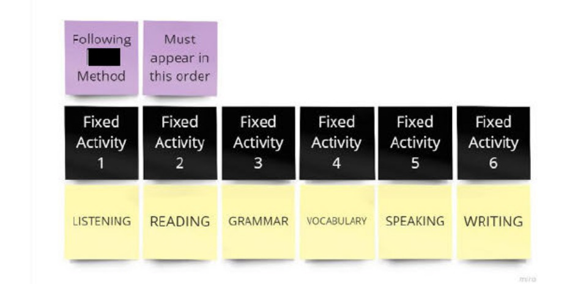

My own boards and schemas, made by hand while I planned the content. The method name and one product name are redacted.

SKETCH 1 OF 2The diagnostic orderA board of sticky notes. Two notes at the top read following a named method, redacted, and must appear in this order. Below them six dark notes read fixed activity one to six, and under each a yellow note names a skill: listening, reading, grammar, vocabulary, speaking, writing.FED INTO ·Note 01 · Learning Meter ▸
SKETCH 2 OF 2What a level changesA schema. A box reading activity level differentiation, levels zero, one and two, branches to two lists. Content design elements: content focus, distractor complexity, support mechanisms, audio focus, skill complexity. Game design elements: template layering, guidance and hints, user prompts, tested items, duration, screen count.FED INTO ·Note 01 · Learning Meter ▸